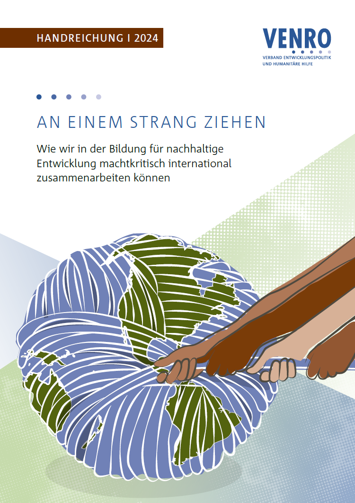

Zertifizierte Freie Lektorin ADM · ordentliches Mitglied im VfLL
Feinschliff für Manuskripte, Biografien und Kulturtexte.
Ich unterstütze Autor*innen, Kulturschaffende und Organisationen mit Lektorat und Korrektorat –
sorgfältig, strukturbewusst und mit Sinn für sprachliche Nuancen.
Lektorat · Korrektorat · Textarbeit mit literatur- und sprachwissenschaftlichem Blick
ADMZertifizierte Freie Lektorin
VfLLOrdentliches Mitglied
MAGermanistik & Anglistik
0 €Kostenloses Probelektorat
Über mich
Sprachgefühl, Struktur und ein genauer Blick für Nuancen.
Ich bin Anne Alder, zertifizierte Freie Lektorin ADM mit einem Master in Germanistik und Anglistik. Mein
fachlicher Hintergrund verbindet Literaturwissenschaft, Sprachwissenschaft und redaktionelle Praxis.
Während meines Studiums habe ich mich intensiv mit literarischen Texten, Erzählformen, sprachlichen
Varietäten
und modernen Shakespeare-Adaptionen beschäftigt. Diese Perspektive fließt in meine Arbeit an Stil, Ton,
Struktur und Textwirkung ein.
Je nach Textzustand: sauberes Korrektorat oder tiefgehendes Lektorat.
Mein Fachgebiet ist das belletristische Lektorat, insbesondere Romane, Kurzgeschichten, Kinderbücher und
Theaterstücke. Im Bereich Non-Fiction liegen meine Schwerpunkte auf (Auto-)Biografien und Texten aus dem
Kulturbereich.
Wenn der Text inhaltlich steht
Korrektorat
5–6 € pro Normseite
Für Texte, die zuverlässig korrigiert und formal vereinheitlicht werden sollen.
Einheitliche Schreibweisen von Namen und Begriffen
Formale Konsistenz nach Absprache
Wenn der Text weiter reifen soll
Lektorat
5–8 € pro Normseite im ersten Durchgang
Für Texte, die sprachlich, stilistisch und strukturell weiterentwickelt werden sollen.
Stil, Ton, Lesefluss und Verständlichkeit
Handlung, Figuren, Perspektive und roter Faden
Zielgruppengerechte Sprache und inhaltliche Schlüssigkeit
Zweiter Durchgang: 30 % des ersten Bearbeitungsdurchgangs
Preisgrundlage: Eine Normseite umfasst 30 Zeilen à max. 60 Anschläge, also 1.500 Zeichen
inklusive Leerzeichen. Absprachen per E-Mail oder Telefon sind Teil der Leistung und werden nicht separat
berechnet.
Die Referenzen zeigen unterschiedliche Textsorten und Projektkontexte, von biografischen Erzählungen bis
hin
zu fachlich anspruchsvollen Publikationen.
Biografisches Lektorat
Mut zum Aufbruch
Zwölf Interviewbiografien mit persönlicher Stimme und stimmigem Gesamtkonzept.

Fachlektorat
VENRO: An einem Strang ziehen
Fachliche Richtigkeit, klare Struktur und zielgruppengerechte Sprache.
Englischsprachiges Referenzprojekt
VENRO: Pulling together
Fachlich präzise, kohärente und gut lesbare Publikation im internationalen Kontext.
Ablauf
Vom ersten Kontakt bis zum finalen Feinschliff.
KontaktaufnahmeSie schildern Textart, Umfang, Zeitplan und gewünschte
Bearbeitung.
TextauszugIdeal sind zwei bis drei Seiten aus dem Mittelteil Ihres
Manuskripts.
ProbelektoratIch bearbeite einen kurzen Auszug kostenlos, damit Sie meine
Arbeitsweise kennenlernen.
AngebotAuf Basis des Textzustands erhalten Sie ein transparentes, unverbindliches
Angebot.
BearbeitungIch arbeite mit Änderungsmodus und Kommentaren, nachvollziehbar und im
Austausch mit Ihnen.
Finale KorrekturNach Ihrer Rückmeldung folgt der zweite Durchgang oder ein
optionaler letzter Feinschliff.
Kontakt
Erzählen Sie mir von Ihrem Text.
Für ein unverbindliches Angebot senden Sie mir gern Umfang, Textart, Zeitplan und Ihre Wünsche. Ein kurzes
Probelektorat ist kostenlos.
Schreiben Sie mir gern mit Textart, Umfang und Zeitplan.
Ich melde mich mit einer ersten Einschätzung zurück.
Was umfasst ein Korrektorat?
Beim Korrektorat stehen sprachliche Korrektheit, Einheitlichkeit und formale Sorgfalt im Vordergrund. Ich prüfe
Ihren Text insbesondere in diesen Bereichen:
Rechtschreibung
Rechtschreib- und Tippfehler
Groß-/Kleinschreibung
Zusammen-/Getrenntschreibung
Anglizismen und Fremdwörter (sofern nicht als stilistisches Mittel beabsichtigt)
Interpunktion
Punkt- und Kommasetzung
Bindestrich vs. Gedankenstrich
Anführungszeichen
Grammatik
Satzbau und Satzbezüge
Präpositionen
Zeiten und Verbformen
Deklination
Indirekte/direkte Rede
Satzbezüge
Konjunktiv
Einheitlichkeit und Formalien
Grundsätzlich nach Absprache, je nach Bedarf und Vorgaben.
Konsistente Schreibweise von Namen und Begriffen
Zahlen und Maßangaben
Fachausdrücke, Abkürzungen
Schreibvarianten
Einheitliche Quellenangaben und Zitierweisen (Sachtext)
Positionierung und Beschriftung von Grafiken, Tabellen und Bildern (Sachtext)
Absätze und Seitenumbrüche
Fußnoten
Silbentrennung
Seitenzahlen
Formatierung und Layout (Fließtext, Überschriften, Zitierweise, Beschriftungen, Bildunterschriften)
Das Korrektorat eignet sich besonders, wenn der Text inhaltlich bereits steht und sprachlich zuverlässig
geglättet werden soll.
Was umfasst ein Lektorat?
Neben der Korrektur von Rechtschreibung und Grammatik wird der Text inhaltlich und stilistisch geprüft und
optimiert. Beim inhaltlichen Lektorat steht die Frage im Vordergrund, ob das Manuskript logisch aufgebaut ist
und, insbesondere bei Sachtexten, die Daten und Fakten korrekt wiedergegeben werden. Bei stilistischen
Schwächen, wie Wortwiederholungen oder Bandwurmsätzen, mache ich entsprechende Alternativvorschläge.
Rechtschreibung, Zeichensetzung, Grammatik
Alle Leistungen (wenn gewünscht) aus dem Korrektorat
Inhalt
Stimmigkeit der Handlung, Handlungsorte (Setting) und Figurencharakterisierung
Einhaltung der Erzählperspektive
Zielgruppengerechte Sprache und Inhalte
Daten- und Faktencheck (v.a. Sachbuch, Biografie)
Konflikte und ihre (Nicht-)Lösung
Struktur
Gliederung, roter Faden
Argumentation und Schlussfolgerungen (v.a. Sachtexte)
Textaufbau (Chronologie, Rückblenden, Zeitebenen)
Sprache und Stil
Einheitlichkeit der Erzählzeiten
Begriffliche und sprachliche Sensibilität
Vermeidung von Schachtel- und Bandwurmsätzen („und“-Verbindungen), (Wort-)Wiederholungen und
Aneinanderreihungen (z.B. „Und dann…“)
Verzicht auf ein Übermaß an Nominalstil und Passivkonstruktionen
Stimmige Verwendung von Metaphern, Vergleichen und Redewendungen
Angemessene Komplexität und Erklärung von Fachtermini (je nach Zielgruppe)
Die einzelnen Kriterien werden je nach Text, Ziel und Absprache unterschiedlich gewichtet oder auch
weggelassen.
Mehr über mich
Seit jeher ein Bücherwurm mit großem Interesse an Sprache(n) und Literatur, habe ich nach einer Ausbildung zur
Fremdsprachenassistentin ein Masterstudium in Anglistik und Germanistik erfolgreich absolviert.
Während meines Werdegangs arbeitete ich redaktionell und in unterschiedlichen fachlichen Kontexten, unter
anderem
für ein Internetprojekt der Ganske Verlagsgruppe sowie in einer Anwaltskanzlei mit Texten aus den Bereichen
Marken-, Urheber- und Patentrecht.
Mein organisatorisches Geschick, meine Genauigkeit und mein literaturwissenschaftlicher Blick kommen mir bei
meiner Tätigkeit als Lektorin zugute: Ich achte auf sprachliche Feinheiten, den roten Faden, Ton und Zielgruppe.
Qualifikationen
Ich bin zertifizierte Freie Lektorin ADM und ordentliches Mitglied im Verband der Freien Lektorinnen und
Lektoren e. V. (VFLL).
Das Lektorat für Mut zum Aufbruch der Biografiewerkstatt Hamburg lag mir besonders am Herzen. Die
zwölf auf Interviews basierenden Biografien mit bewegenden Lebensgeschichten sollten jeweils für sich stehen,
indem sie den persönlichen Ton der Interviewten bewahren, und dennoch ein stimmiges Gesamtkonzept ergeben.
Ein Lektorat mit besonderem Augenmerk auf fachliche Richtigkeit, zielgruppengerechte Sprache und klare
Strukturierung: An einem Strang ziehen: Wie wir in der Bildung für nachhaltige Entwicklung machtkritisch
international zusammenarbeiten können.
Ein englischsprachiges Referenzprojekt mit besonderem Augenmerk auf fachliche Richtigkeit, zielgruppengerechte
Sprache, Kohärenz und klare Strukturierung: Pulling together: How to establish power-critical international
collaboration in Education for Sustainable Development.
USt. wird nicht ausgewiesen (Kleinunternehmerregelung).
Haftung für Inhalte
Die Inhalte dieser Seiten wurden mit größter Sorgfalt erstellt. Für die Richtigkeit, Vollständigkeit und
Aktualität der Inhalte kann dennoch keine Gewähr übernommen werden.
Haftung für Links
Diese Website enthält Links zu externen Webseiten Dritter, auf deren Inhalte kein Einfluss besteht. Für die
Inhalte der verlinkten Seiten ist stets der jeweilige Anbieter oder Betreiber verantwortlich.
Urheberrecht
Die durch die Seitenbetreiberin erstellten Inhalte und Werke auf diesen Seiten unterliegen dem deutschen
Urheberrecht. Downloads und Kopien dieser Seite sind nur für den privaten, nicht kommerziellen Gebrauch
gestattet.
Datenschutz
Die Nutzung dieser Webseite ist in der Regel ohne Angabe personenbezogener Daten möglich. Soweit
personenbezogene Daten, beispielsweise Name oder E-Mail-Adresse, erhoben werden, erfolgt dies auf freiwilliger
Basis.
Diese Seite nutzt zur Übermittlung der im Kontaktformular eingegebenen Informationen den Dienst Web3Forms.
Anbieter ist Web3Forms Inc. Die Nutzung von Web3Forms dient der Kontaktaufnahme über das angebotene
Kontaktformular.
Der Nutzung der im Impressum veröffentlichten Kontaktdaten zur Übersendung nicht ausdrücklich angeforderter
Werbung und Informationsmaterialien wird hiermit widersprochen.